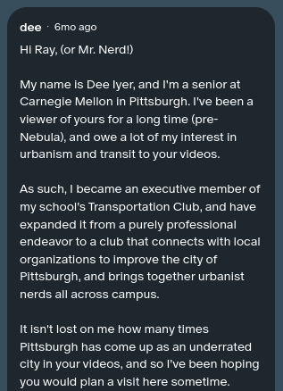

March 14th, 2024
Became an officer of CMU Transportation Club
Throughout my time at Carnegie Mellon, I built up a spreadsheet of various capstone ideas, ranging from incredibly technical to vaguely creative. What I had not planned for was to find myself knee-deep in a project conceived in October 2024 that was very tangentially related to any of my concentrations. Ultimately, it ended up being a serendipitous situation, addressing a time-sensitive issue with direct action. In addition, I was able to gain a number of new skills, and broaden my creative horizons.
For an independent study class last spring, I explored a few of my capstone ideas, eventually settling on an adaptive method of playing string instruments (in this case, a viola). I tested various materials, such as magnets and bearings, but eventually I was able to create a rough prototype of a device that could be mounted on my existing instrument. It used a round spool-like object that could move along the string, mimicking techniques such as vibrato and trills. However, I hit a barrier in building a functional prototype, and decided that the scope of the precision manufacturing needed to achieve the desired results would be outside the scope of my capstone.
During the summer of 2024, I began working on a concept for a "smart" TENS (Transcutaneous Electrical Nerve Stimulation) unit, inspired by a love for signal processing and a desire to build something to advance non-pharmacological pain intervention techniques. Despite promising progress, I hit quite a few walls, as the unit I was testing on had proprietary connections and I was hesitant to make too many modifications. I decided to pivot my capstone when I began working on Pittsburgh Weekend of Urbanism, while continuing my research into TENS technology.
Became an officer of CMU Transportation Club
Messaged CityNerd on Patreon
Finalized visit to Pittsburgh
Began social media outreach
While I have definitely gained technical knowledge throughout this process, I believe my biggest gain has been in soft skills. Putting together an event like this requires the coordination of dozens of different parties, each with their own requirements, and jumping through many bureaucratic hoops.